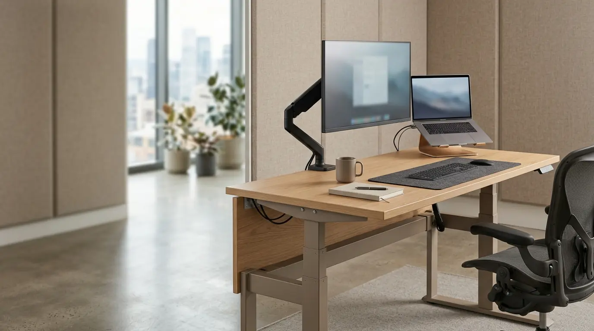

Mengapa Penting Memahami Cara Mengatur Standing Desk yang Benar?
Memahami cara mengatur standing desk secara akurat merupakan faktor penentu utama agar penggunaan meja adjustable berdampak positif bagi kesehatan. Meja berdiri (height-adjustable desk) diciptakan untuk memfasilitasi gerakan dinamis selama bekerja. Namun, jika penyetelan tingginya tidak sesuai dengan proporsi tubuh, beban pada persendian dan tulang belakang justru dapat meningkat. Berdasarkan studi Ergonomics Workstation Review 2025, lebih dari 55% pengguna standing desk mengalami ketegangan bahu karena menyetel permukaan meja terlalu tinggi dari jangkauan siku.
Dengan menerapkan konfigurasi yang tepat, Anda tidak hanya mengurangi dampak buruk gaya hidup sedenter (kurang bergerak), tetapi juga dapat meningkatkan sirkulasi darah serta membakar lebih banyak kalori harian. Pengadaan furnitur fleksibel seperti ini melalui distributor terpercaya Perlengkapan Kantor menjadi solusi modern bagi perusahaan yang ingin membangun lingkungan kerja yang sehat dan produktif.
Tabel panduan berikut merangkum acuan standar tinggi permukaan meja berdasarkan tinggi badan pengguna:
| Tinggi Badan Pengguna | Tinggi Meja Saat Duduk (cm) | Tinggi Standing Desk Berdiri (cm) |
|---|---|---|
| 155 - 165 cm | 60 - 64 cm | 95 - 102 cm |
| 166 - 175 cm | 65 - 69 cm | 103 - 110 cm |
| 176 - 185 cm | 70 - 74 cm | 111 - 118 cm |
| 186 cm + | 75 - 79 cm | 119 - 125 cm |
- Menyesuaikan tinggi standing desk hingga siku membentuk sudut 90° mengurangi tekanan otot trapezius hingga 35%.
- Kombinasi berdiri dan duduk secara bergantian mampu meningkatkan daya fokus dan tingkat energi hingga 28%.
- Penggunaan alas berdiri (anti-fatigue mat) menyerap beban benturan pada sendi lutut dan tumit saat bekerja berdiri.
Langkah-Langkah Presisi Mengatur Tinggi Standing Desk
Proses penerapan cara mengatur standing desk agar sesuai dengan antropometri tubuh dapat dilakukan melalui langkah-langkah praktis berikut:
- Atur Posisi Berdiri Tegak dan Rileks: Berdirilah dengan kaki dibuka selebar bahu. Pastikan berat badan terbagi rata pada kedua kaki dan posisi leher tetap netral (tidak menunduk atau menengadah).
- Tekuk Lengan Menjadi Sudut 90 Derajat: Posisikan siku Anda di samping badan dan tekuk lengan bawah hingga sejajar lurus dengan lantai.
- Daftarkan Tinggi Meja ke Permukaan Siku: Naikkan atau turunkan permukaan standing desk hingga tepat menyentuh bagian bawah telapak tangan atau keyboard tanpa membuat bahu terangkat.
- Pastikan Pergelangan Tangan Lurus: Ketika jemari mengetik di atas keyboard, pergelangan tangan harus tetap dalam garis lurus netral, bukan menekuk ke atas atau ke bawah.
Jika Anda menggunakan standing desk elektrik dengan fitur memory preset, simpan angka ketinggian ideal tersebut untuk mempermudah transisi otomatis kapan saja.

Penataan posisi meja dan laptop yang sejajar dengan sudut siku memberikan kenyamanan ekstra dan mencegah risiko cidera persendian.
Pengaturan Posisi Monitor dan Aksesori Kerja Tambahan
Menyetel tinggi meja hanyalah separuh dari prinsip ergonomi. Komponen vital lainnya adalah menyelaraskan posisi monitor dan peralatan pendukung di atas meja kerja:
- Tinggi Layar Monitor: Puncak layar monitor sejajar lurus dengan arah pandang mata horizontal. Gunakan monitor arm agar posisi layar fleksibel mengikuti gerakan berdiri dan duduk.
- Jarak Pandang Aman: Tempatkan layar sejauh 50–70 cm dari mata (kira-kira sepanjang rentangan satu lengan tangan).
- Posisi Mouse dan Keyboard: Letakkan mouse persis di samping keyboard agar jangkauan tangan tetap rapat di dekat tubuh tanpa memicu ketegangan pundak.
- Penggunaan Anti-Fatigue Mat: Taruh karpet matras ergonomis di bawah kaki saat berdiri untuk melancarkan sirkulasi darah serta mengurangi kelelahan otot betis.
Rasio Ideal Antara Posisi Duduk dan Berdiri Jangka Panjang
Kesalahan utama banyak pekerja adalah berdiri terus-menerus sepanjang hari. Ergonomi modern menekankan pentingnya dinamika pergantian posisi (sit-stand rhythm).
Rasio terbaik yang direkomendasikan para ahli K3 (Kesehatan & Keselamatan Kerja) adalah pola 45:15—yaitu 45 menit bekerja dalam posisi duduk dengan kursi ergonomis, lalu dilanjutkan dengan 15 menit berdiri menggunakan standing desk. Selalu lakukan peregangan ringan saat beralih posisi untuk melepaskan ketegangan sendi.
Kesalahan Umum Saat Menggunakan Standing Desk di Kantor
Agar manfaat kesehatan diperoleh secara maksimal, hindari beberapa kesalahan umum berikut saat menerapkan cara mengatur standing desk:
- Menyetel Meja Terlalu Tinggi: Menyebabkan bahu terangkat (shrugged shoulders) yang memicu kaku leher dan sakit kepala tension-type.
- Mengunci Sendi Lutut (Locking Knees): Berdiri dengan lutut lurus kaku menghambat aliran darah balik ke jantung. Tekuk sedikit lutut secara fleksibel.
- Memakai Sepatu yang Tidak Mendukung: Hindari sepatu berhak tinggi atau bersol tipis keras tanpa bantalan saat bekerja posisi berdiri.
- Menolak Menggunakan Kursi Ergonomis: Standing desk bekerja paling efektif jika dipadukan dengan kursi kerja ergonomis berkualitas saat fase duduk.
Pertanyaan Populer Seputar Cara Mengatur Standing Desk
Kesimpulan Praktis
Menerapkan cara mengatur standing desk yang presisi merupakan investasi penting untuk kesehatan postur tubuh, stamina, dan efisiensi kerja. Dengan perpaduan pengaturan tinggi meja yang tepat, posisi monitor yang ideal, serta dukungan produk meja kerja adjustable dari Perlengkapan Kantor, ruang kerja Anda akan menjadi jauh lebih kondusif dan ergonomis.

Penulis: Ardhana Prasasta
Spesialis konten & konsultan furnitur tata ruang kantor di Perlengkapan Kantor. Berpengalaman dalam memberikan panduan solusi ergonomis, efisiensi ruang kerja, dan pengadaan perlengkapan kantor korporat.